An exploration in pictures · November 2026
Black Swan Jeweled Math
Can we reshape a satisfiability landscape so that its solutions stay fixed while the paths to them become easier to find?
This page walks through a playground of experiments on Boolean satisfiability (SAT), golden-ratio rotations, quasicrystals, aperiodic tilings and the complex plane. Each experiment asks the same visual question: can a change of weights or geometry make search easier without adding or removing a single solution?
It is not a proof that P = NP, and it does not claim to be. The experiments are finite and small. They keep their failures, controls and independent audits next to their successes, and the strongest results turned out to be limits rather than speed-ups.
How to read this
Every claim carries one of three labels:
- Proven a theorem or an exact identity, with its source.
- Open a question or proposal nobody here has settled.
- Observed something our own code showed. It is a finite measurement, not a proof.
Every picture is a screenshot of an interactive lab in this repository; click through to use it. The labs run locally in the browser with their data included.
Contents
- The question
- The first jewel
- Tilings and adaptive weights
- The golden-ratio sweep
- Two complex planes
- Conformal jewels
- Feigenbaum by eigenvalue
- Callbacks and next steps
- Counting jewels
- Where this leaves us
- Appendix: labs, code, reproduction
1The question
A SAT formula is a list of clauses such as (x₁ ∨ ¬x₂ ∨ x₃); an assignment satisfies it when every clause has a true literal. Write uj(x) = 1 when clause j is violated and 0 otherwise, and give each clause a weight wj:
Ew(x) = Σj wj uj(x).
- If every weight is positive, Ew(x) = 0 exactly at the satisfying assignments, whatever the weights are (Proven). The weights can reshape the hills and valleys of the landscape, but they cannot move its solutions.
- With spins si = ±1, a three-literal clause is violated by the amount uC = ⅛ Π(1 − σisi): SAT becomes the ground state of a three-spin energy (Proven, an exact rewriting).
- The hope behind the name: a rare, structured weighting (a "black swan") that makes the path to zero easy. Whether one exists in general is the P versus NP question in disguise (Open).
2The first jewel
The first experiment drew the eight assignments of a three-variable formula in the complex plane, then tried weights built from the golden ratio, wj = 1 + 0.6 cos(2πj/φ + θ), and from the first ten zeta zeros.
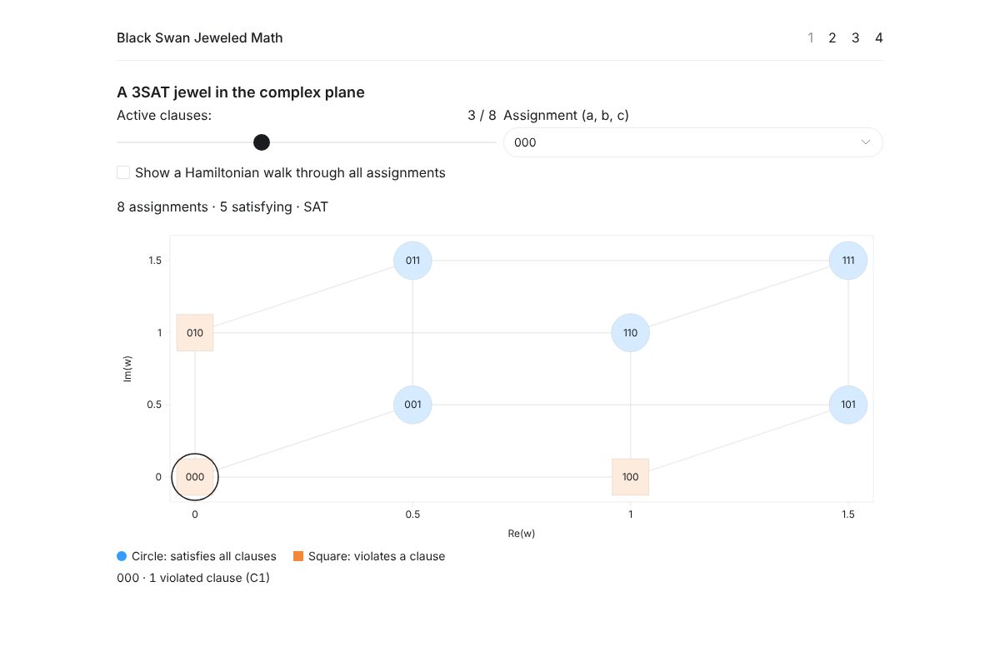
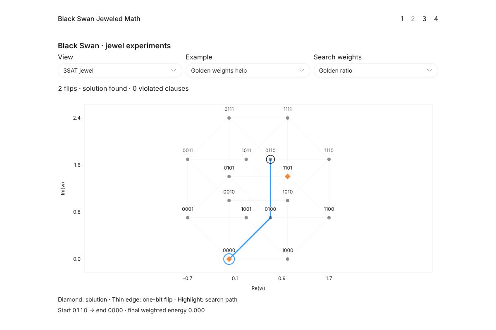
On 48 planted formulas with 16 variables, 384 runs per method (Observed):
| Method | Solved / 384 |
|---|---|
| Strict greedy, uniform weights | 87 |
| Golden-ratio weights | 102 |
| Golden weights, shuffled | 117 |
| Zeta-zero weights | 111 |
| Zeta weights, shuffled | 119 |
| WalkSAT | 382 |
Lesson. Reweighting can free a stuck greedy search, but the shuffled controls did better than the structured weights. The order of the weights, golden or zeta, carried no special benefit here.
3Tilings and adaptive weights
The second experiment took real geometry: patches of 4, 25 and 169 hats generated by the hat authors' own substitution code, and pinwheel triangles refined to 625 tiles. Tile orientations became clause phases.
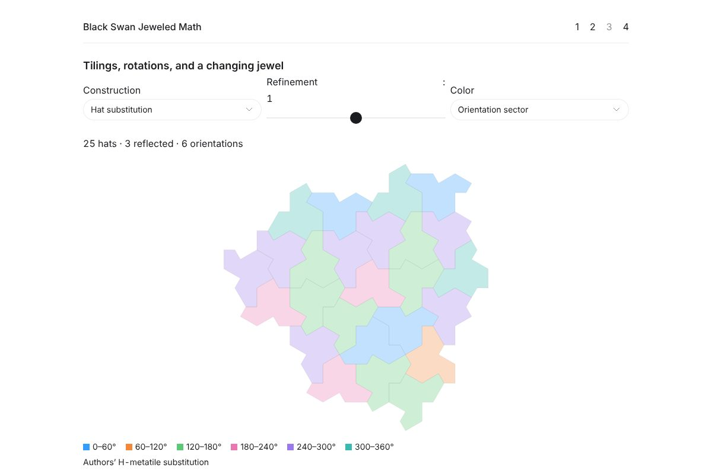
- The boost 3 + 4 cos a + cos 2a = 2(1 + cos a)² is never negative (Proven), so adding it to violated clauses keeps every weight positive and every solution in place.
- Adaptive boosts at a trap, as in Morris's Breakout method, escape where fixed weights stall (Observed on selected small examples, not a benchmark).
- A side trip: Euler's sine product gives ζ(2) = π²/6, and the lattice points visible from the origin have density 6/π² (Proven, Euler; classical).
4The golden-ratio sweep
The third experiment tested everything at once: 202 configurations (11 constants × 3 tilings × 6 schedules, plus 4 controls), 96 formulas with 12–32 variables, three starts each, for 58,176 searches. The candidate was chosen on training formulas only.
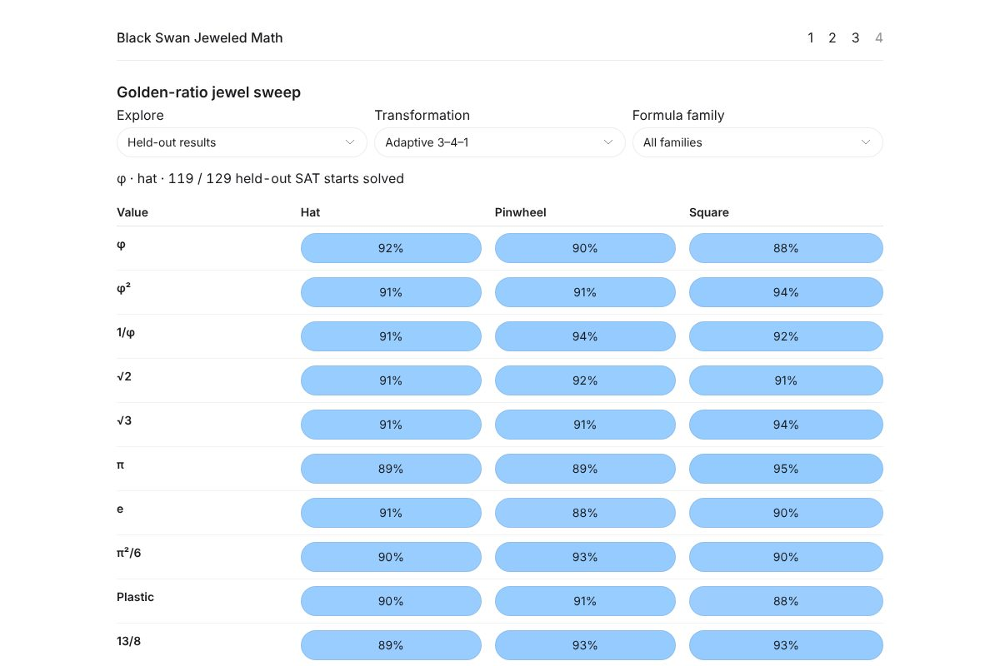
| Method | Held-out SAT starts | Fresh relabelings |
|---|---|---|
| Selected candidate (13/8, pinwheel, adaptive 3–4–1) | 120 / 129 | 354 / 387 |
| Plain Breakout | 116 / 129 | 352 / 387 |
| WalkSAT | 129 / 129 | 384 / 387 |
- No constant stood out; golden-ratio variants are related rotations, not independent evidence (Observed).
- A fixed-weight obstruction. For any seven fixed positive clause-position weights there are seven three-variable clauses, with a unique solution, on which strict one-bit descent stalls (Proven, in the sweep report). Adaptive weights and noise are outside this obstruction.
5Two complex planes
The fourth experiment lifted each formula to a complex field. Every variable becomes a phasor eiθk(z) whose phase depends on a point z of an input plane, and clauses become interference products in an output plane:
FΦ(z) = Σc e2πic/ρ Πj (1 − sc,j eiθ(z))/2,
with ρ the plastic number. The solver screened tiles by winding numbers, zoomed with a Möbius lens, and added noise from a logistic map tuned near Feigenbaum's accumulation point.
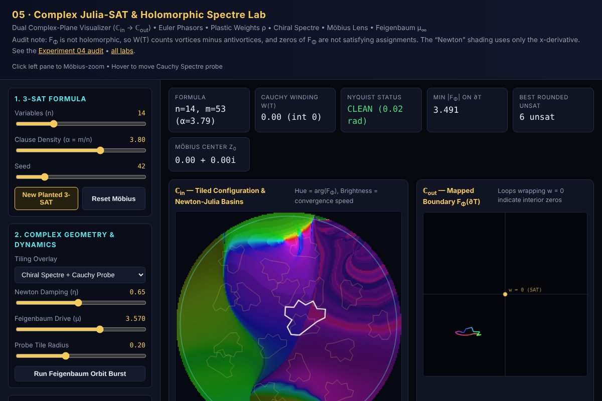
Its recorded benchmark reproduces exactly (Observed). An independent audit then found:
- The field is not holomorphic. Each phase depends on x and y separately, so a winding number counts vortices minus antivortices, by degree theory, not zeros (Proven). Measured: 27 vortices and 31 antivortices across 40 formulas, and roughly half the plane reverses orientation (Observed).
- Zeros are not solutions. None of the 58 zeros rounds to a satisfying assignment, and |F| is uncorrelated with the number of violated clauses (Observed).
- One plane is a thin slice. L lines cut a plane into at most 1 + L + L(L−1)/2 regions (Proven, Steiner), so a plane shows only polynomially many assignments, and seeing all 2ⁿ needs exponentially large frequencies (Proven). For the formula Experiment 03 missed, the unit disk shows 128 of 262,144 assignments and none of its 9 solutions (Observed, by exhaustive count).
- The geometry did not help. Random starts in place of the tiles and lens solve as many formulas and run 3–4× faster; a plain random-number generator works as well as the Feigenbaum driver; step counts match WalkSAT's (Observed).
6Conformal jewels
The two-plane picture is still worth having as a picture. Tile the input plane z = x + iy and carry every tile through w = f(z) = u + iv: the graph lives in four real coordinates (x, y, u, v), and two linked planes let us follow one tile through it.
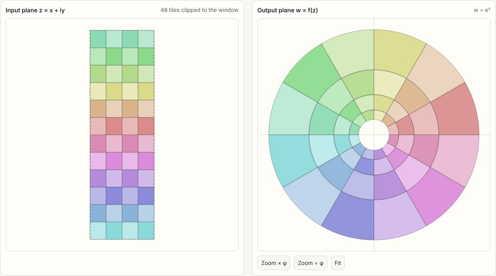
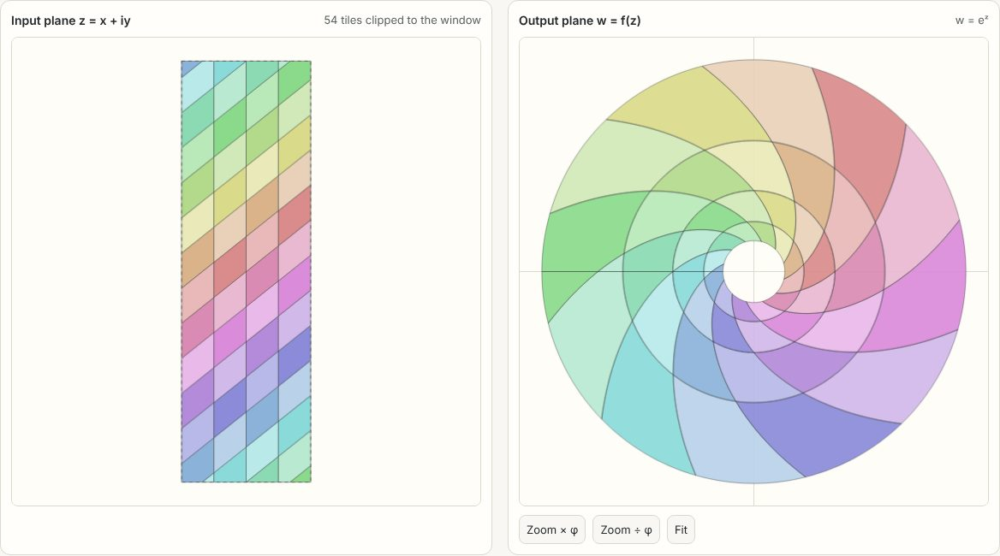
- ex+iy = exeiy: vertical lines become circles, horizontal lines become rays, and tilted lines y = sx + b become spirals r = e(θ−b)/s (Proven).
- Euler's identity becomes a construction rule: ez+iπ = −ez (a half-turn), ez+2πi = ez (a full wrap), and ez+log c = c ez (scaling by c) (Proven). The lab's step buttons apply them to a selected tile and report the ratio exactly.
- Feigenbaum's α ≈ −2.503 is negative, so log α = log|α| + iπ: one level of period doubling is a ring step plus Euler's half-turn, and two levels make a full wrap (Proven). The α jewel at the top of this page is invariant under w ↦ αw.
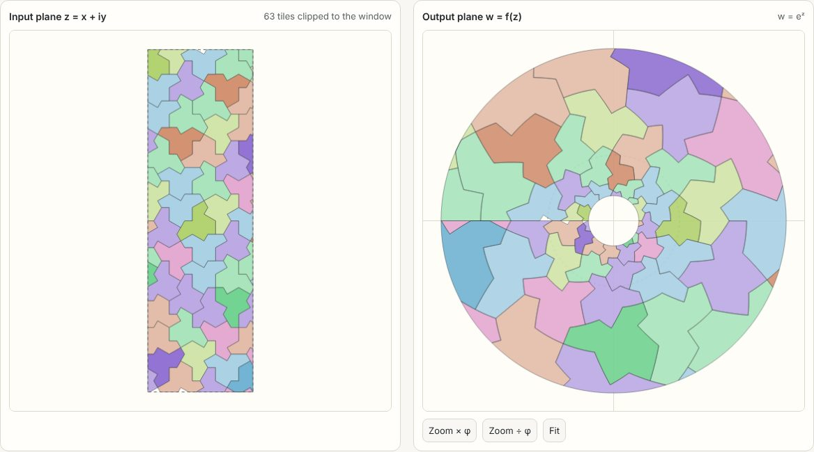
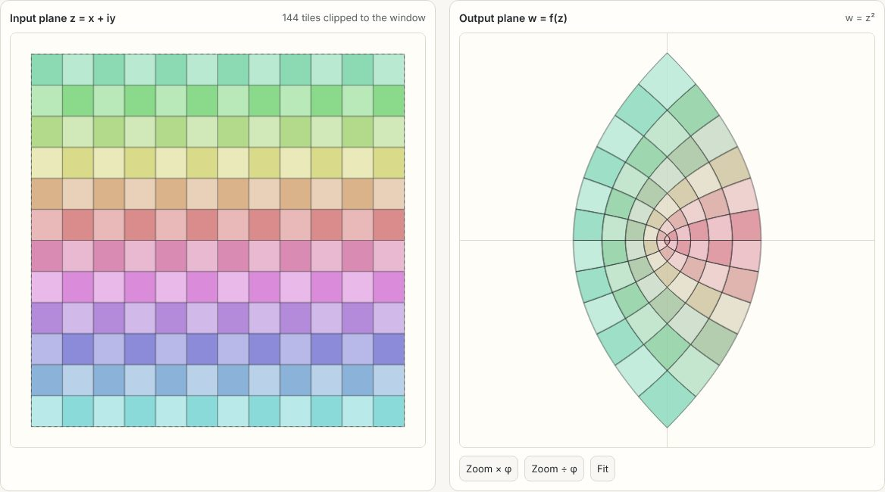
- A nonlinear image need not stay a non-overlapping tiling. On one strip of height 2π, eᶻ keeps tiles apart; z² on a window symmetric about 0 covers its image twice (Proven; the lab measures 1.00 and 2.00, Observed).
- The Weierstrass ℘-function is built from a lattice and is doubly periodic and even, so one period cell covers its image twice (Proven). The lab's ℘ satisfies ℘′² = 4℘³ − g₂℘ − g₃ to about 10⁻⁶ (Observed).
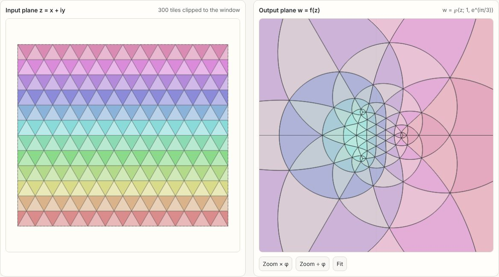
7Feigenbaum by eigenvalue
For fc(z) = z² + c, the parameters where 0 lies on a cycle of period 2k crowd toward c∞ ≈ −1.40116. Feigenbaum's δ ≈ 4.669 measures how the parameter gaps shrink; α ≈ −2.503 measures how space rescales near the critical point.
- Through period 512, the gap ratios are 4.668548581 → 4.669060661 → 4.669171555, and the last signed spatial ratio is −2.502906472 (Observed, reproduced exactly). Continuing to period 16,384 gives δ to 8 digits: each doubling gains one factor of δ in accuracy but doubles the work.
- δ is also the only expanding eigenvalue of the linearized period-doubling operator at its fixed point g(x) = α g(g(x/α)) (Proven, Feigenbaum; Collet, Eckmann and Lanford; computer-assisted proof by Lanford 1982). Solving for g with 32 terms gives δ to 45 digits and α to 48 (Observed).
- "Compose twice and rescale" converges: the rescaled iterates of z² + c∞ approach g, from an error of 0.034 to 1.7 × 10⁻⁹ over nine levels (Observed).
8Callbacks and next steps
- One ruler function. The kneading sequence at the accumulation point, RLRRRLRLRLRRRLRR…, is the parity of the 2-adic valuation ν₂(j). The same function schedules Gray-code flips, generates Luby's restart runs, and defines the 2-adic absolute value (Proven; checked for 1,023 symbols, Observed).
- Optical vortices. The phasor field is a sum of plane waves; its zeros are wave dislocations of charge ±1, as in laser speckle (Nye and Berry 1974; Berry and Dennis 2000).
- Counting regions. The plane-slice bound is the same counting as Cover's 1965 theorem on perceptron capacity.
- Proposals. A field with complex frequencies, whose winding number really does count zeros; an exact search over the cells of one plane; continuous-time SAT dynamics in place of the phasor flow; and a test of ruler-based restarts against Luby's (Open).
9Counting jewels
A November 2026 paper on discrete logarithms suggested a different instrument: instead of searching a landscape, count it. Give every clause the weight z, and a formula becomes its energy polynomial Z(z) = Σ Nk zk, where Nk counts assignments that violate k clauses and N0 counts solutions. The paper's own headline rests on unverified preprints; its tools are classical, and Experiment 05 tested them.
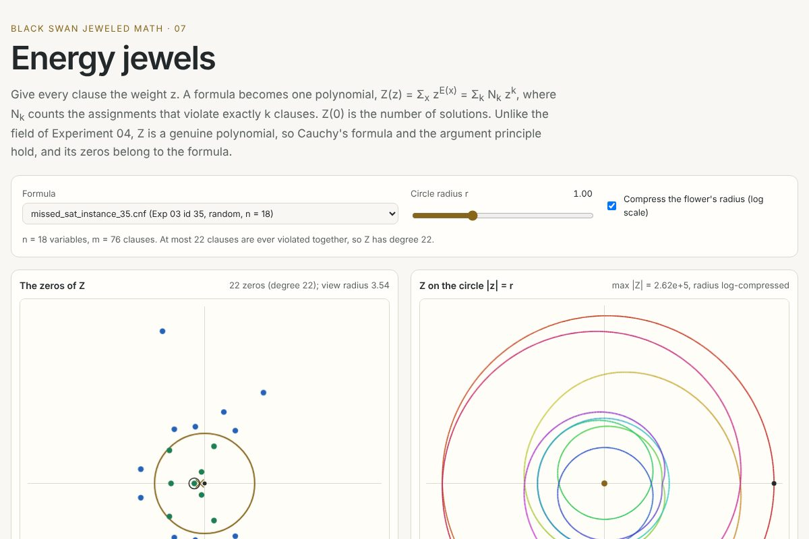
- Exact tensor contraction reproduces brute force, all 96 of Experiment 03's satisfiability labels, and the count 2n−rank of XOR systems; counting alone also finds a witness (Observed).
- Z is a genuine polynomial, so Cauchy's integral returns the number of solutions on any circle, and the argument principle counts its zeros (Proven). As clauses are added, more zeros enter the unit disk and the nearest zero moves toward the origin, reaching it exactly when the formula becomes unsatisfiable (Observed, n ≤ 20).
- Counting costs about 2width: width ≈ 0.69 n for random formulas at the threshold, ≈ 2√n for formulas living on a grid or a hat patch. Tilings help through geometry, but the hat substitution hierarchy is a poor contraction order (Observed).
- Starting from Johnson's conditional-expectation assignment cuts WalkSAT's work 2–9× and solves 26 of 89 formulas outright; rewrites that keep the solution count but add variables make search much harder (Observed).
- The look-alike test: planted XOR-SAT has the same sparse random structure, Gaussian elimination solves it in milliseconds, and every landscape method slows exponentially on it. Landscape methods read local hints; XOR has none (Observed).
10Where this leaves us
- What holds exactly: positive weights never move solutions; fixed weights can be trapped by seven clauses; a plane sees only polynomially many assignments (Proven).
- What helped in practice: noise and adaptive weights, the ordinary tools of local search (Observed).
- What did not: golden, zeta, plastic or Feigenbaum structure on its own (Observed, on small finite benchmarks).
- Exact counting reveals a landscape completely, at a cost of about 2width; width grows like n for random formulas at the threshold (Observed).
- Whether any structured landscape makes SAT easy in general (Open; it is P versus NP).
Next steps are in the roadmap: a certified hard suite and a tripwire harness that every new method must face, reweighting the energy jewels, Lee–Yang zeros as formulas grow, a derandomization ladder, frozen variables, and continuous-time solvers.
11Appendix: labs, code, reproduction
Interactive labs
- The first 3SAT jewel
- Quasicrystals and search
- Tilings and adaptive weights
- The golden-ratio sweep
- Complex Julia-SAT lab
- Conformal jewels
- Energy jewels
Reports
- Experiment 01: the initial jewel
- Experiment 02: tiling jewels
- Experiment 03: the golden sweep
- Experiment 04: complex Spectre and its audit
- Experiment 05: counting jewels
- Angles from the discrete-log paper
- Callbacks and next steps
Reproduce
python -m pip install -r requirements.txt
python experiments/03_golden_sweep/run_sweep.py
python experiments/04_complex_spectre/run_experiments.py
python experiments/04_complex_spectre/audit_exp04.py
python experiments/04_complex_spectre/feigenbaum_renormalization.py
python experiments/05_counting_jewels/run_counting.py
python experiments/05_counting_jewels/run_search.py
node make_site_images.js # redraws the pictures on this pageThe full list of commands is in the repository README. The hat geometry comes from the hat authors' BSD-3-Clause source; see the third-party notices.
Related journey: Fleurdelys, the Riemann zeta function as a flower.